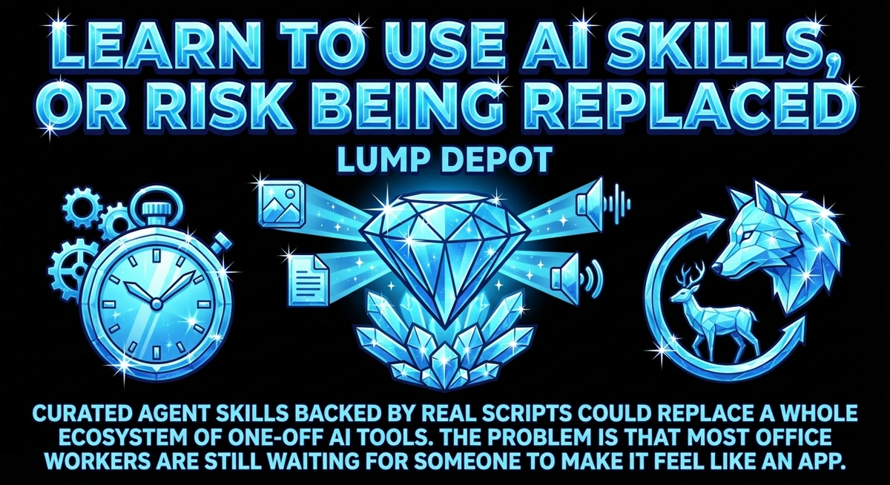
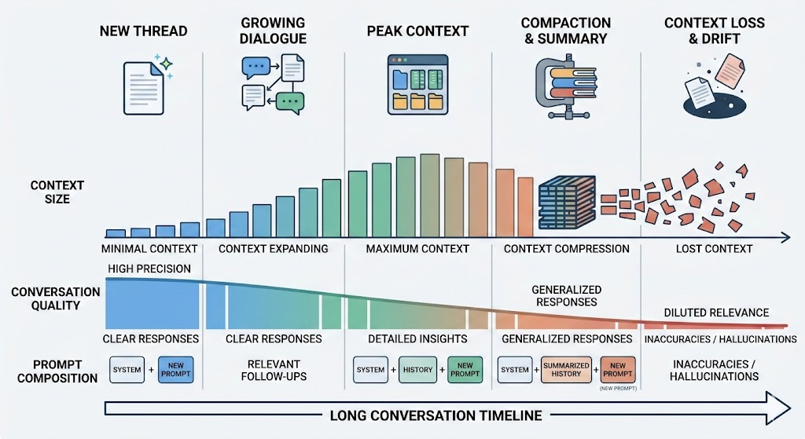
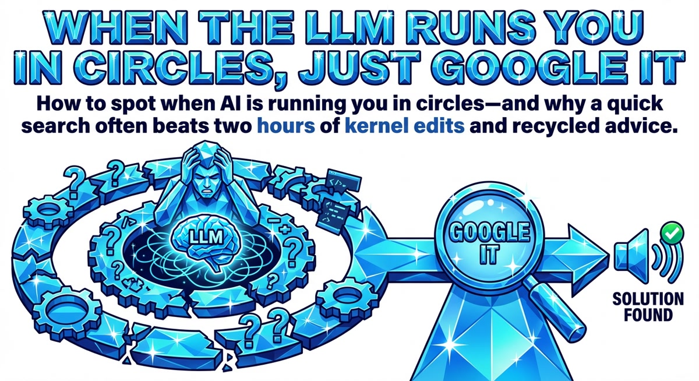
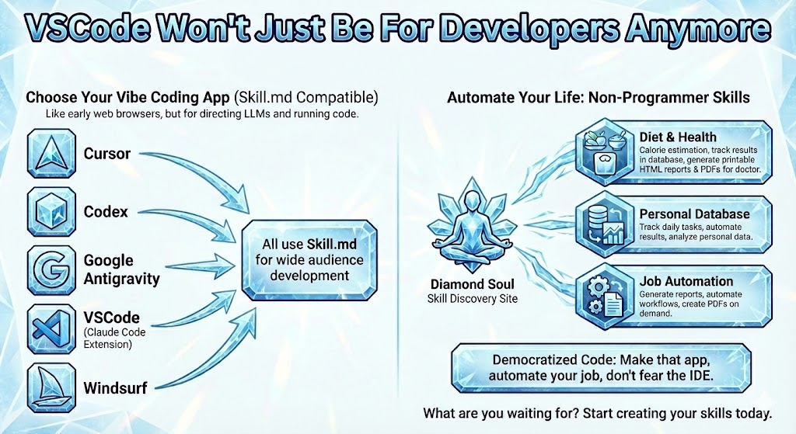
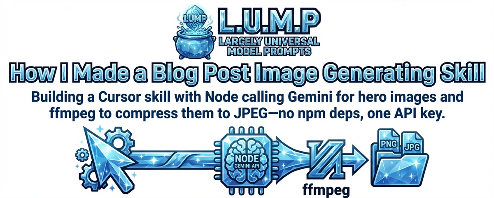
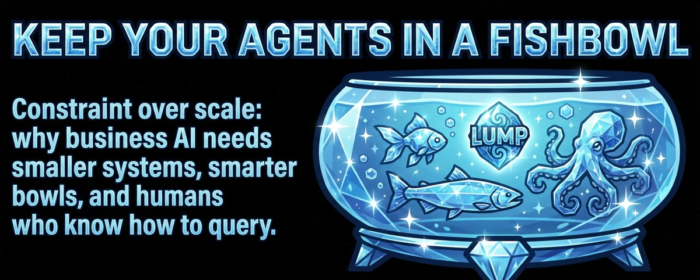
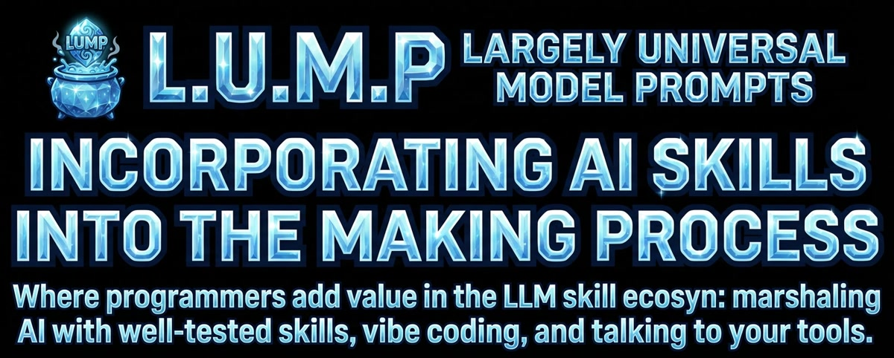

The Expert Imposter
Everyone feels like an imposter sometimes. It's hard to be confident when the world changes this fast. But AI has gotten very good at it too, and it doesn't have the same doubts you do.
The ingredients in the slop we turn into a stew, or something.
Everyone feels like an imposter sometimes. It's hard to be confident when the world changes this fast. But AI has gotten very good at it too, and it doesn't have the same doubts you do.

Curated agent skills backed by real scripts could replace a whole ecosystem of one-off AI tools. The problem is that most office workers are still waiting for someone to make it feel like an app.

Are you stacking everything in one chat? Making new chats is probably the most important thing you can do to manage context while editing.

How to spot when AI is running you in circles—and why a quick search often beats two hours of kernel edits and recycled advice.

LLM vibe-coding apps are mostly VSCode forks. They share Skill.md, so you can write skills for a wide audience—and non-programmers can direct the LLM from the IDE.

Building a Cursor skill that calls Gemini to generate crystalline hero images for posts and wires them into the HTML and meta tags.

Constraint over scale: why business AI needs smaller systems, smarter bowls, and humans who know how to query.

Where programmers add value in the LLM skill ecosystem: marshaling AI with well-tested skills, vibe coding, and talking to your tools.